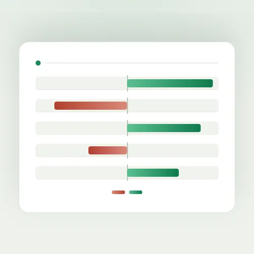
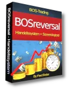
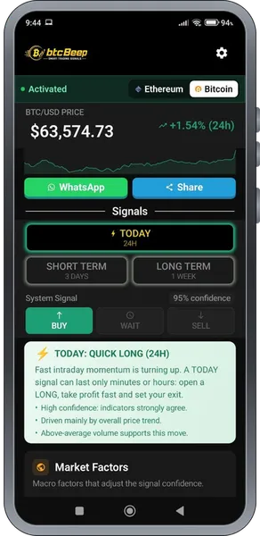

Money Flow Tape – Wohin Kapital rotiert · 40 % Provision
Produktprofil · Marktplatz-Daten 2026-10-14 · Verkaufsseiten-Recherche 2026-10-14 · Kategorien: Trading Products, Business & Investment, Finances
- Money Flow Tape – Wohin Kapital rotiert · 40 % Provision ist ein/e Mitgliederbereich & Videokurs in Trading Products und Business & Investment, vertrieben über den Digistore24-Marktplatz von Anbieter pgventures, gelistet seit 2026-07-21.
- Listenpreis $100.97; Digistore24 meldet — Checkout-Konversion, — Stornierungsquote und 40 % Affiliate-Provision.
- Verdienst pro Verkauf (Affiliate): $40.39 (Anbieter-seitige Statistik, keine Prognose).
Interesse an Money Flow Tape – Wohin Kapital rotiert · 40 % Provision? Aktueller Preis, Boni und Garantiebedingungen finden Sie auf der offiziellen Seite des Anbieters:
Offizielle Verkaufsseite ansehen
Affiliate-Link (Werbung) — wir verdienen ggf. eine Provision, ohne Mehrkosten für Sie.

Marktplatz-Daten
| Produkttyp | Mitgliederbereich & Videokurs |
|---|---|
| Preis | $100.97 (Subscription) |
| Affiliate-Provision | 40 % |
| Garantie/Rückgabe | Laut Verkaufsseite des Anbieters — vor dem Kauf auf der offiziellen Seite prüfen |
| Anbieter | pgventures (gelistet seit 2026-07-21) |
| Marktplatz-Statistiken* | Checkout-Konversion — · Stornoquote — · Verdienst/Verkauf $40.39 |
* Anbieter-seitige Statistiken von Digistore24; sie hängen von der Traffic-Qualität ab und sind keine Prognose.
Marktplatz-Beschreibung des Anbieters
Money Flow Tape zeigt Privatanlegern täglich, wohin das Kapital an den Märkten rotiert — und misst, welche Wirtschaftstermine den Markt überhaupt bewegen. Dazu jeden Samstag ein Briefing im Mitgliederbereich, mit monatlichem Rückblick und vollständigem Archiv. Rein deskriptiv: keine Signale, keine Kaufempfehlungen, keine Renditeversprechen. Was du verdienst 40 % auf jede einzelne Zahlung — auch auf jede Verlängerung. Ein Jahresabo zahlt dir bei jedem Verlängerungsjahr erneut aus. 180 Tage Cookie-Laufzeit — deutlich über dem Marktplatz-Durchschnitt. Wer nach fünf Monaten kauft, zählt noch auf dich. Automatische Freischaltung — kein Bewerbungsverfahren, kein Warten. Link holen und loslegen. Warum es sich verkauft Ein Aufhänger, den sonst niemand hat. Wir haben neun Wirtschaftstermine gemessen: fünf bewegen ihren Markt nachweisbar, vier nicht. Die Bank of Japan bewegt USD/JPY in 43,1 % der Fälle gegenüber 12,1 % an gewöhnlichen Tagen — der PCE-Preisindex, über den ständig geschrieben wird, liegt mit 7,3 % darunter. Diese Tabelle darfst du in deinem Newsletter zeigen. Sie schreibt dir die Betreffzeile von selbst. Kein Compliance-Risiko in deiner Kommunikation. Weil das Produkt keine Signale gibt, musst du auch keine versprechen. Du bewegst dich nicht in der Grauzone, in der die meisten Trading-Angebote dieses Marktplatzes stehen. Ein Produkt, das sich selbst überprüft. Jeden Samstag erscheint das Briefing im Mitgliederbereich — und einmal im Monat schlägt ein Rückblick nach, was aus den Deutungen des Vormonats geworden ist. Alle Ausgaben bleiben im Archiv. Diese Nachprüfbarkeit hat auf diesem Marktplatz sonst niemand, und sie gibt dir jede Woche einen konkreten Anlass für deinen Content. Breite Zielgruppe. Vom ETF-Sparplan bis zum aktiven Trader — jeder mit einem Depot versteht die Frage „wohin fließt das Geld gerade". 14 Tage kostenloser Test — niedrige Klickhürde für deine Leser. Was du bekommst Partnerseite mit fertigen E-Mail-Vorlagen zum Kopieren: indicator.trading/de/partner Banner in allen Standardformaten (in Vorbereitung) Klare, kurze Spielregeln — du weißt in 30 Sekunden, was du sagen darfst Zielgruppe: deutschsprachige Privatanleger, die verstehen wollen, wohin das Kapital rotiert, ohne selbst Trader zu sein. Passt auf Finanz-Newsletter, YouTube, Blogs und Finanz-Communitys. Money Flow Tape ist ein deskriptives Informationsprodukt — keine Anlageberatung, keine Kauf-/Verkaufsempfehlungen. Historische Messwerte sagen nichts über künftige Marktbewegungen. Stand der Messwerte: August 2026.
Von der Verkaufsseite des Anbieters
Seitentitel: Sektorrotation live verfolgen — wohin Kapital rotiert · Money Flow Tape
Meta-Beschreibung: Sektorrotation bei Aktien, täglich gemessen: wohin Kapital über 17 Bereiche rotiert — und welche Termine den Markt wirklich bewegen. 14 Tage kostenlos testen.
Hauptüberschrift
Follow the money.
Abschnitts-Überschriften
- Nicht jede Bewegung ist eine Wende.
- Der Wirtschaftskalender hat ausgedient.
- Und dann die wichtigere Frage: wann.
- Warum fällt gerade dieser Sektor?
- Acht Module. Jedes beantwortet genau eine Frage.
- Der Money Flow Tape in 12 Minuten erklärt
- Zwei Blickwinkel auf dieselben Daten
- Wir veröffentlichen auch, was nicht funktioniert hat.
- Drei Situationen. Kennst du eine davon, bist du hier richtig.
- Vier Sätze, die wir dir nie sagen werden.
Einstiegstext
Die meisten Werkzeuge sagen dir, was du kaufen sollst. Money Flow Tape zeigt dir, wohin Kapital rotiert und wie belastbar diese Bewegung ist — damit du entscheiden kannst, wann eine Position Rückenwind hat, wann sie gegen den Strom läuft und wann Absichern überhaupt zur Debatte steht.
Rotation Nicht jede Bewegung ist eine Wende. An der Börse hat das einen Namen: Sektorrotation. Kapital verschwindet nie, es wandert — raus aus Technologie, rein in Financials. Raus aus Aktien, rein in Gold. Money Flow Tape misst diese Rotation täglich über siebzehn Bereiche — als relative Stärke gegen den Gesamtmarkt, eingeordnet gegen die eigene Historie.
Entscheidend ist aber nicht die Bewegung allein, sondern ob sie getragen wird . Deshalb siehst du jeden Bereich auf zwei Zeitachsen gleichzeitig: die letzten Wochen und die letzten Monate.
Termine Der Wirtschaftskalender hat ausgedient. Ein Kalender sagt dir, dass etwas ansteht, und klebt drei Sterne daran. Er sagt dir nie, ob dieser Termin je etwas bewegt hat. Wir haben nachgezählt — neun regelmäßige Termine, jeweils an dem Markt, den der Termin betrifft.
Preisangaben auf der Seite: $17 · $25 · $33
Recherche-Methode: rohes HTML · 2486 Wörter · Qualität: rich · recherchiert am 2026-10-14. Vollständige Recherche-Datei (MD) ↗
Wie Produkte dieser Art geliefert werden
Allgemeiner Hinweis zu diesem Produkttyp (keine anbieterspezifische Anleitung): Videokurse laufen über einen Mitgliederbereich: nach dem Checkout erhalten Sie Zugangsdaten per E-Mail und können die Lektionen in Ihrem eigenen Tempo streamen. Für die genaue Anwendung von Money Flow Tape – Wohin Kapital rotiert · 40 % Provision sind die offizielle Verkaufsseite und die enthaltenen Materialien maßgeblich.
Gut zu wissen
- Keine Garantie-Formulierung in unserer Recherche gefunden — bestätigen Sie das Rückgabefenster auf der offiziellen Seite, bevor Sie kaufen.
- Marktplatz-Zahlen (Preis, Provision, Konversion, Stornoquote) — Quelle: offizielle Digistore24-Marktplatz-API (Affiliate-Sicht), Stand 2026-10-14. Gegenprüfung: Marktplatz-Suche nach Produkt-ID 712825.
- Verkaufsseiten-Zitate — Quelle: https://indicator.trading/de/money-flow, abgerufen 2026-10-14 (Methode: rohes HTML). Verify: offizielle Seite öffnen.
- Garantie / Rückgabe — vom Anbieter festgelegt; vor dem Kauf auf der Verkaufsseite bestätigen.
- Nicht von uns geprüft: Produktqualität, Ergebnisse, Testimonials — kein Praxistest für dieses Listing durchgeführt.
Häufige Fragen zu Money Flow Tape – Wohin Kapital rotiert · 40 % Provision
Antworten aus dem Marktplatz-Snapshot (2026-10-14) und der Verkaufsseiten-Recherche (2026-10-14); Anbieteraussagen sind inline gekennzeichnet.
Was ist Money Flow Tape – Wohin Kapital rotiert · 40 % Provision?
Money Flow Tape – Wohin Kapital rotiert · 40 % Provision ist ein Angebot des Typs „Mitgliederbereich & Videokurs" im Digistore24-Marktplatz, Anbieter: pgventures, gelistet seit 2026-07-21. Eingepflegt unter Handelsprodukte und Business & Investment. Digistore24 wickelt Checkout, Lieferung und Rückgaben ab.
Wie viel kostet Money Flow Tape – Wohin Kapital rotiert · 40 % Provision?
Der Digistore24-Marktplatz listet es für $100.97 (subscription). Preise legt der Anbieter fest und können sich ändern — der Marktplatz-Eintrag oben zeigt den Schnappschuss; die offizielle Verkaufsseite zeigt den aktuellen Preis.
Gibt es eine Geld-zurück-Garantie für Money Flow Tape – Wohin Kapital rotiert · 40 % Provision?
Unsere Verkaufsseiten-Recherche hat keine explizite Garantie-Formulierung gefunden. Viele Digistore24-Produkte bieten 60 Tage Geld-zurück, aber das legt jeder Anbieter selbst fest — bestätigen Sie es auf der offiziellen Verkaufsseite, bevor Sie kaufen.
Ist Money Flow Tape – Wohin Kapital rotiert · 40 % Provision seriös?
Wir bewerten keine Seriosität — wir veröffentlichen überprüfbare Zahlen: Anbieter pgventures (gelistet seit 2026-07-21), Checkout-Konversion —, Stornoquote —, Affiliate-Verdienst/Verkauf $40.39 (alles Anbieter-seitige Marktplatz-Statistiken). Lesen Sie unsere 6-Punkte-Bewertungsmethode und entscheiden Sie anhand der Zahlen — oder diskutieren Sie Money Flow Tape – Wohin Kapital rotiert · 40 % Provision auf GitHub.
Wo kann ich Money Flow Tape – Wohin Kapital rotiert · 40 % Provision sicher kaufen?
Nur über die offizielle Verkaufsseite, die auf dieser Seite verlinkt ist (Checkout und Rückgaben laufen über Digistore24). Prüfen Sie dort Preis und Garantie vor der Bestellung. Der Link ist ein Affiliate-Link — der Kauf unterstützt diese Website ohne Mehrkosten für Sie.
Wie erhalte ich Money Flow Tape – Wohin Kapital rotiert · 40 % Provision nach der Zahlung?
Der Checkout läuft über Digistore24: Nach der Zahlung erhalten Sie Zugangsdaten und Ihr Abo-Dashboard. Lieferdetails für diesen Produkttyp: Videokurse laufen über einen Mitgliederbereich: nach dem Checkout erhalten Sie Zugangsdaten per E-Mail und können die Lektionen in Ihrem eigenen Tempo streamen. Bei Problemen kann der Digistore24-Käufersupport Ihre Bestellung wiederherstellen.
Alle 50 Käuferfragen zu Handelsprodukte — das komplette Kategorie-FAQ.
Money Flow Tape – Wohin Kapital rotiert · 40 % Provision auf Reddit diskutieren
In Community-Threads vergleichen echte Käufer Erfahrungen. Wir verlinken Communities, keine einzelnen Posts — Threads verschwinden, Subreddits bleiben:
- r/Finanzen — deutschsprachige Community mit Diskussionen zu trading products.
- Reddit-Suche nach „Money Flow Tape – Wohin Kapital rotiert · 40 % Provision" — Live-Ergebnisse, von uns nicht beeinflusst.
- Top-„Erfahrungs"-Treffer dieses Jahr — selbst nach Aktualität filtern.
Passendes auf Amazon.de
Physische Produkte und Zubehör, die häufig zusammen mit Money Flow Tape – Wohin Kapital rotiert · 40 % Provision gekauft werden:
- Marketing Bücher auf Amazon.de — Top-Ergebnisse, Amazon-Ranking.
- Bestseller: Marketing Bücher — live Liste von Amazon, von uns nicht kuratiert.
Werbung: Als Amazon-Partner verdient DigistorePicks DE an qualifizierten Käufen (Partner-tag adminstorede-21). Amazon setzt eigene Preise und Provisionen (niedrige einstellige Prozente — weit unter den 30–75% der Digistore24-Anbieter). Amazon ist ein Convenience-Angebot für Sachprodukte, kein Ersatz für das digitale Produkt oben.
Ähnliche Angebote in Handelsprodukte

Unsere Plattform Affiliateking.net – nutze sie, um zusätzlich zu den Provisionen saftige Zusatzeinnahmen zu kassieren. Hier direkt zur Partnerseite + Werbemitte

Bundle aus mehreren Produkten zum Thema sichere Optionsstrategien. Als Affiliate bewirbst Du ein zentrales Thema – der Kunde durchläuft einen mehrstufigen Conve

TOP-Dauereinkommen! DIE Ausbildung zur Neuen Geldordnung (NGO) und zum Krypto-Handel für den Master - Gewinn am Krypto-Markt. Deine Vorteile als Affiliate: hoch

Vermittle die aktuell schnellste & sicherste (Day)Trader Ausbildung, die im deutschsprachigen Raum angeboten wird. Extrem hohe Nachfrage! Darum wählen unser
Money Flow Tape – Wohin Kapital rotiert · 40 % Provision ist auch gelistet in
Business & Investment (606 Produkte) · Finanzen (84 Produkte)
Ähnliche Preislage in Handelsprodukte
Bewerbe die Copy Trading Masterclass und kassiere 50% Provision ! Ideal für alle, die in dem Bereich tätig sind und / oder im Bereich Geld verdienen. Da es hier
Exklusiver Premium Tradingservice - Lifetime Provision für Affiliates DAX Professional - Wie unsere Kunden mit einem Zeitaufwand von maximal 5 Minuten am Tag vo

Handelssystem, Screening- und Chart-Tool für den Forex-Handel. PLUS Tool zum automatischen Handel der Signale (Expert Advisor) Kostenfreie Nutzung im Jahr 2023

btcBeep ist eine seriöse, vollständig freigegebene App, die live im Google Play Store verfügbar ist. Sie wurde für Android entwickelt, das Betriebssystem, auf d
Ähnliche Suchanfragen
Wo Sie es sich ansehen können
Wo Sie es sich ansehen können
Aktuelle Preise, Garantie und Boni finden Sie auf der offiziellen Verkaufsseite:
Offizielle Verkaufsseite ansehen
Das ist ein Affiliate-Link (Werbung) — kaufen Sie darüber, verdienen wir ggf. eine Provision, ohne Mehrkosten für Sie.
Quellen & weiterführende Informationen
- Offizielle Verkaufsseite (aktueller Preis, Garantie, Boni): indicator.trading/de/money-flow (Affiliate-Link)
- Öffentliche Digistore24-Produktseite: checkout-ds24.com/product/712825
- Vollständige Recherche-Datei (Markdown, versioniert): content/products/57665-money-flow-tape-wohin-kapital-rotiert-40-provision.md
- Affiliate-Supportseite des Anbieters: indicator.trading/de/partner
- Marktplatz-Kategorie: Handelsprodukte
Wie wir Produkte wie Money Flow Tape – Wohin Kapital rotiert · 40 % Provision bewerten
Sechs Prüfungen, ausschließlich mit offiziellen Marktplatz-Zahlen. Die vollständige Bewertungsmethode lesen · unsere Recherche-Standards & Kennzeichnung.
Fragen oder eigene Erfahrungen mit Money Flow Tape – Wohin Kapital rotiert · 40 % Provision?
Praxis-Tests veröffentlichen wir erst, nachdem wir ein Produkt selbst gekauft haben — aber Ihre Erfahrung hilft anderen Lesern: Diskussion zu Money Flow Tape – Wohin Kapital rotiert · 40 % Provision auf GitHub starten/verfolgen. Falsche Zahl gefunden? Korrektur melden — jede Seite zeigt ihre Datenstände, Korrekturen gelten für die ganze Website.